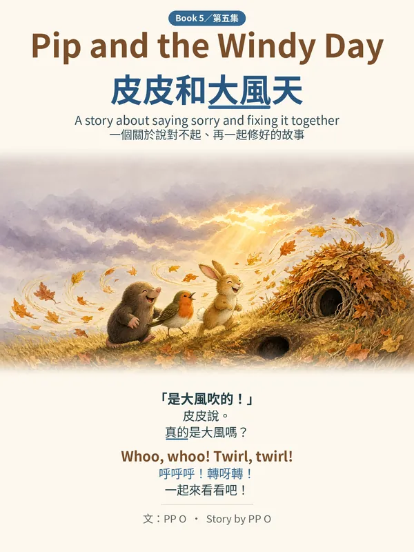
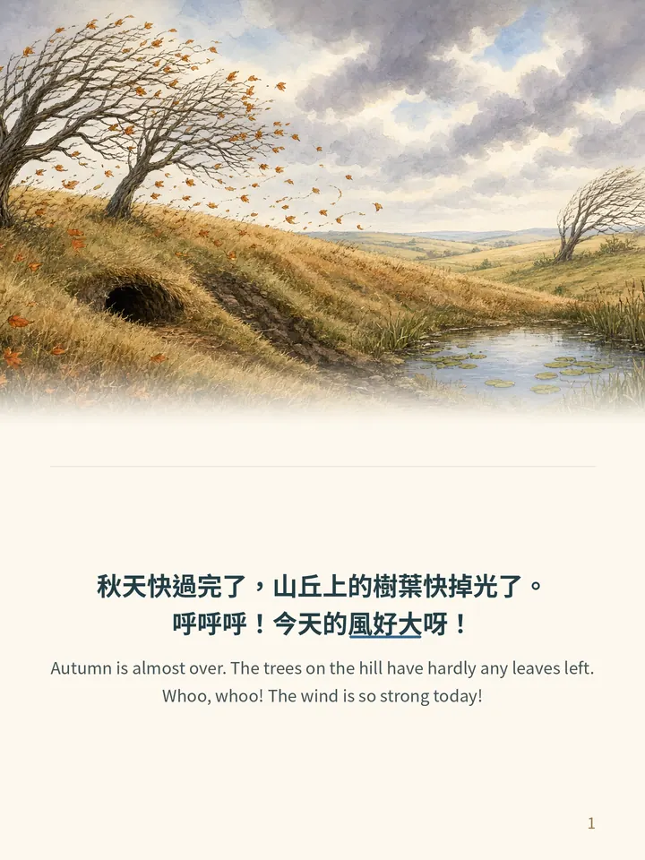
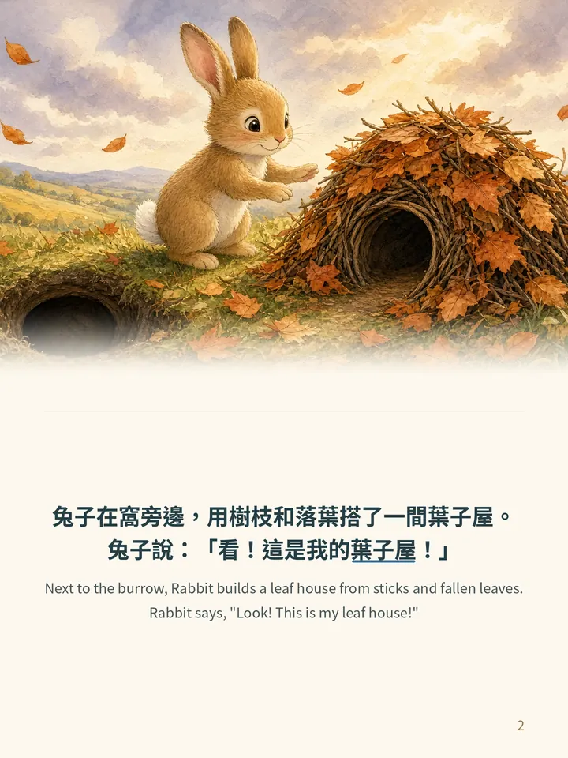
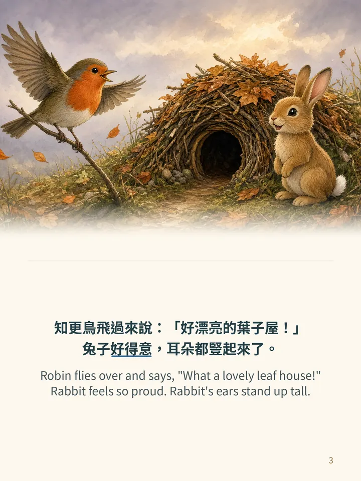
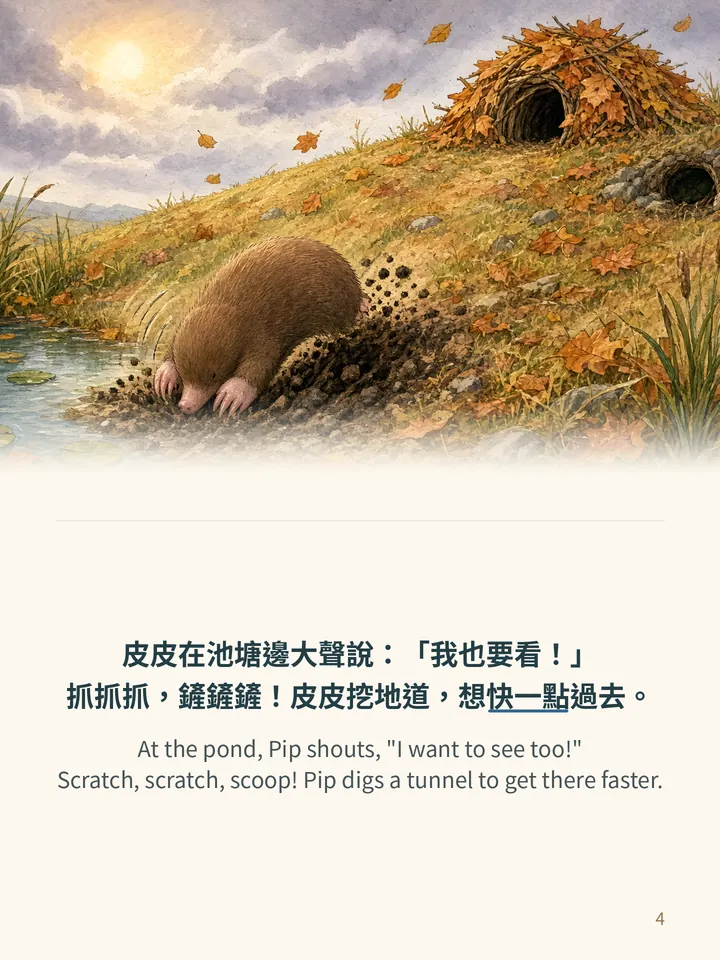

Book 5 · 第五集
Pip and the Windy Day皮皮和大風天
Whoo, whoo! Autumn is almost over and the wind is so strong today. Rabbit builds a leaf house from sticks and fallen leaves. Pip wants to see it too, so he digs a tunnel to get there faster… and pops up right under the leaf house. Down it tumbles! Pip quickly says, “The wind did it!”, but he feels a little stone inside. A gentle story about telling the truth, saying sorry and fixing things together.
兔子搭了一間葉子屋，卻被急急忙忙挖地道的皮皮弄倒了。皮皮先說「是大風吹的！」，心裡卻好不舒服……皮皮說了對不起，大家一起搭出更堅固的葉子屋！
- Ages · 年齡
- 3–6 · 適合 3–6 歲
- Language · 語言
- English + Traditional Chinese on every page · 每頁中英對照（繁體中文）
- Theme · 主題
- Saying sorry and fixing things together · 說對不起、一起修好
- Format · 格式
- PDF ebook, 19 pages (cover, 16 story pages, a read-aloud refrain page, back cover); screen and print-ready 300 dpi versions · PDF 電子書，共 19 頁
- Story · 故事
- PP O (Hong Kong); illustrations AI-generated · 插圖由 AI 生成
Look inside · 內頁預覽




The free sample has the cover and the first 5 story pages. Book 5 also reads fine on its own. 免費試讀版包括封面和故事的頭 5 頁。
More Pip books · 更多皮皮繪本
Pip and the First Snow 皮皮和第一場雪 · Pip and the Autumn Leaves 皮皮和落葉 · Pip and the Night Lights 皮皮和螢火蟲 · Pip and the Big Rain 皮皮和大雨天 · Pip's Big Dig 皮皮的大挖掘